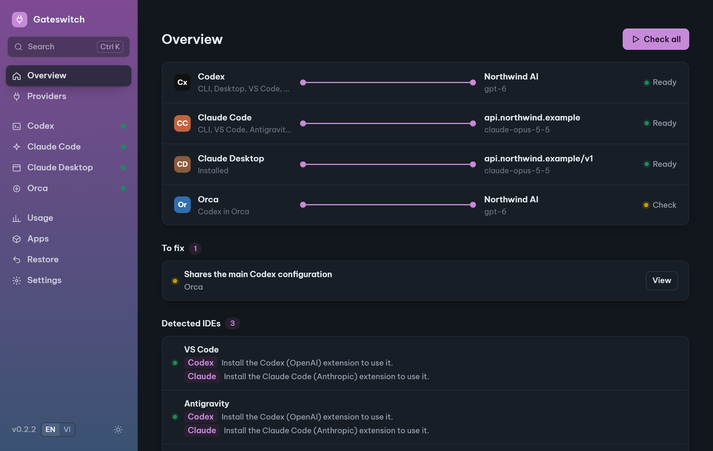
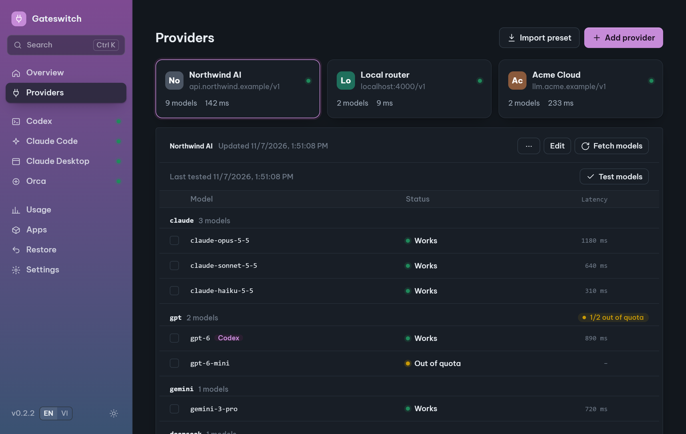
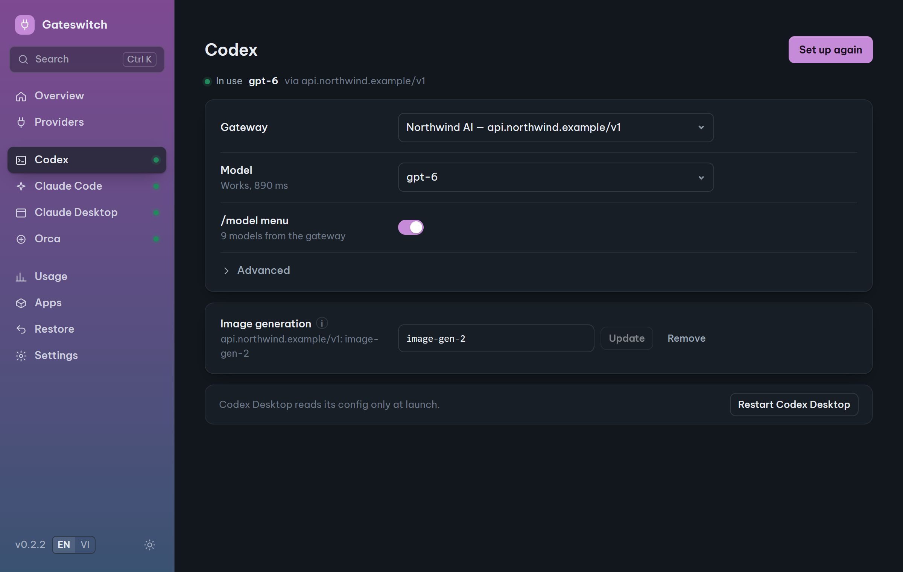
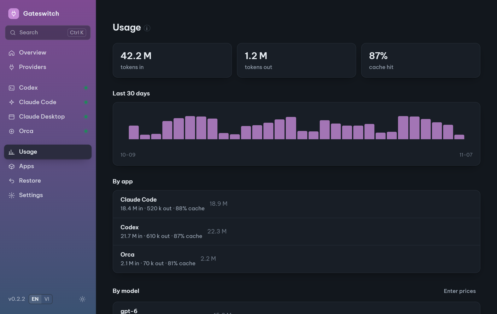

Any AI gateway.
Every coding app.
Point Codex, Claude Code, Claude Desktop and Orca at your LiteLLM, OpenRouter or company gateway in one click. Test models first, and undo anything.

Works with the tools you already use
- CxCodex CLI & Desktop
- CCClaude Code
- CDClaude Desktop
- OrOrca
- IDEVS Code · JetBrains · Antigravity
Stop hand-editing config files
No more digging through config.toml, settings.json and environment variables, then trying to remember how to put them back.
Test every model before you switch
One click checks every model on a gateway: which work, which are out of quota, which reject your key, and how fast they answer. Then probe streaming, tools, prompt caching and images.

Undo anything
Every change is one undoable step with an encrypted backup. Restore defaults puts every app back the way it was before.
Your keys stay yours
Stored in the OS keychain, masked in logs, errors and reports. No account, no telemetry.
Doctor fixes the classic errors
HTTP 400 reasoning_effort, stale variables, broken configs, proxies and managed policies, fixed in one click.
One-click updates
The app tells you when a new version is out. Packages are signed and verified before they install.
Codex, set up properly
Your gateway's models in the /model menu, a neutral provider name, and image generation through your gateway.

Usage without uploads
Tokens, cache hit rate and cost estimates, read from logs already on your machine.

Up and running in a minute
Add your gateway
Base URL and API key, or import a preset. The key goes straight into your OS keychain.
Test the models
Fetch the model list and see which ones actually work before you rely on them.
Set up your apps
Pick an app and a model, click Set up, restart the app. Changed your mind? Undo.
~/.codex/config.tomlOnly the keys it owns. Comments, MCP servers and other providers are kept.~/.claude/settings.jsonAdds a "From gateway" entry to /model. Hooks and permissions untouched.Questions
Is it free?
Yes. Free and open source under the MIT license. No account, no paid tier.
Which gateways work?
Any gateway with an OpenAI-compatible /v1/models and /v1/responses or /v1/chat/completions (for Codex), and an Anthropic-compatible /v1/messages (for Claude Code and Claude Desktop): LiteLLM, OpenRouter, company proxies, local routers. Test models tells you what a given gateway supports.
Is my API key safe?
Keys live in the OS keychain and are written only where an app cannot read them any other way. They never appear in logs, errors, support reports or presets, and backups are encrypted. The app talks only to the gateways you add, plus GitHub to check for updates (you can turn that off).
How do I go back to the official login?
Restore → Restore defaults. Every app goes back to how it was before Gateswitch touched it, and even that can be undone.
Why does Windows or macOS warn me when I open it?
The installers are not code-signed yet. On Windows click More info → Run anyway; on macOS right-click the app → Open. Compare the file's SHA-256 with the one on the release page if you want to be sure. Updates after that are signed and verified by the app.
Does it work on macOS and Linux?
Builds are available for both, but they have not been tested on real machines yet. Windows is tested. A test report on GitHub helps a lot.
I used the old Model Switcher. How do I move over?
Install Gateswitch, add your gateway and key under Providers, then set up each app again. The old tool kept keys in Windows environment variables; once everything works, remove them (for example GATEWAY_API_KEY) in Windows → Edit environment variables for your account.
Get Gateswitch
Free for Windows, macOS and Linux.
macOS and Linux builds have not been tested on real machines yet. Installers are not code-signed yet, so the first launch shows a warning; in-app updates are signed and verified.